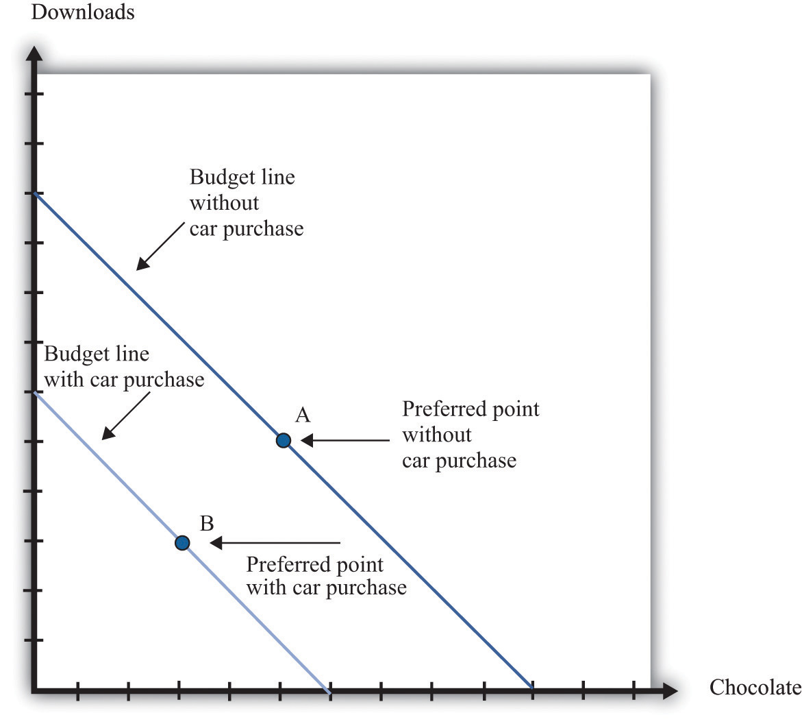
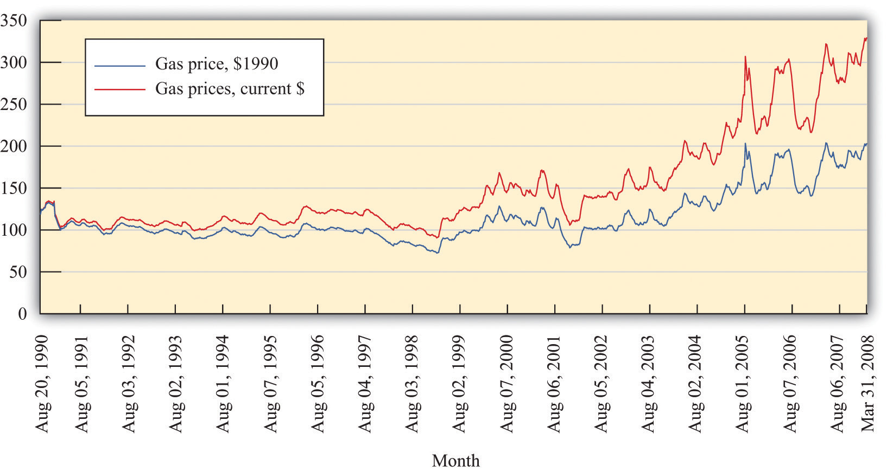
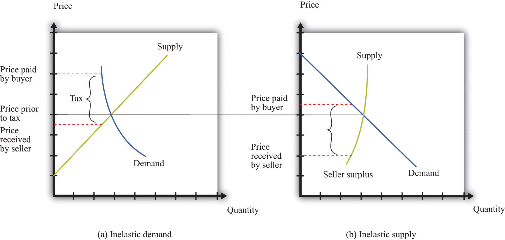
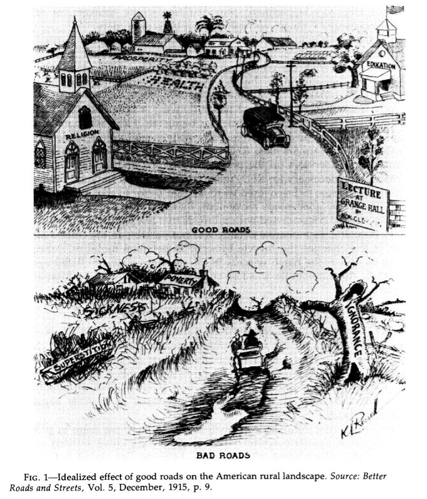

Cars are so common that we rarely give them a second thought. If you live in the United States, then you either already have a car or will most likely have one in a few years’ time; over 90 percent of households in the United States either own or lease a car. Although other countries do not have quite the same levels of car ownership as the United States, there are more than half a billion automobiles in the world.
The familiarity of the car is so great that it is easy to forget how the automobile transformed the world. The automobile made modern cities and suburbs possible because people were no longer obliged to live close to where they worked. The automobile made it easier to transport goods from place to place, dramatically altering patterns of trade in the global economy. At the same time, automobile emissions have degraded the air we breathe to the point where they sometimes seriously damage people’s health. Indeed, because emissions also contribute to the accumulation of greenhouse gases in the atmosphere, the automobile may be changing the very climate of the planet.
Although you may own a car, it is likely that you are unfamiliar with how it works. Half a century ago, car owners were typically very knowledgeable about how their vehicles operated. They needed to be because cars broke down frequently. People knew how to adjust spark plugs, clean distributor caps, and so on. But the modern automobile is a remarkably sophisticated and complex piece of engineering. Today, it is unlikely that an owner of a modern-day car knows how to do much more than very basic maintenance. Even car mechanics rely on computer diagnostics to perform repairs.
Just as the product itself has become increasingly complex, so too has its method of manufacture. In the early years of the 20th century, cars were produced in small numbers and largely by hand. In 1913, however, Henry Ford introduced mass production of cars at Ford’s Highland Park plant.The Library of Congress has an extensive discussion of Henry Ford, including photos of production in 1923 at http://memory.loc.gov/ammem/today/jul30.html. By the middle of the 20th century, cars were typically produced on assembly lines. In contrast to the early years of car production, there were far fewer workers at this stage of the production process.You can find more details at How Stuff Works, “1957–1959 Ford Fairlane 500 Skyliner,” accessed March 14, 2011, http://auto.howstuffworks.com/1957-1959-ford-fairlane-skyliner3.htm.
If you were to visit the production line at a modern automobile manufacturing plant, you would hardly see any people at all. Modern production uses a great deal of capital and relatively little labor. Computerized robots perform manufacturing roles. Yet despite the relative absence of workers on the production line, over one million workers are employed in this sector of the economy in the United States.Basic information about firms and workers in this sector comes from the Bureau of Labor Statistics, “Career Guide to Industries, 2010–11 Edition,” http://www.bls.gov/oco/cg/cgs012.htm. In 2006, about 360,000 jobs were associated with the production of automobile parts alone.This number is from a Bureau of Labor Statistics study of employment in the automobile parts industry: Benjamin Collins, Thomas McDonald, and Jay A. Mousa, “The Rise and Decline of Auto Parts Manufacturing in the Midwest,” Monthly Labor Review Online 130, no. 10 (2007): 14–20, accessed March 14, 2011, http://www.bls.gov/opub/mlr/2007/10/art2full.pdf. In the 21st century, though, there have been significant job losses in this part of the economy.
This chapter is different from others in this book because it is a capstone discussion. We use the automobile industry to illustrate the different ideas we have explained in the book. We also use this industry to provide further examples of how to use the different tools we introduced in previous chapters. Whereas other chapters were largely self-contained, here we will repeatedly remind you of ideas that we have already studied.
We begin our look at cars in a familiar way, using the supply-and-demand framework. All of us who own cars reside on the demand side of the market. We make choices about the type of car we want, whether to buy a new car or a used one, and when to replace it. We also make decisions about related products like gasoline and insurance. The supply side of the car market illustrates technological progress, enormous growth in product diversity, the impact of trade on domestic markets, and the social costs of automobiles. We examine some decisions of automobile producers, including where to locate their operations, why they introduce new models, and what price they should set.
We then study the equilibrium of the car industry. The US car industry began around the start of the 20th century, survived the Great Depression of the early 1930s, and has been transformed by international competition. Understanding these dynamics provides a perspective on other industries. After understanding industry equilibrium, we look at the variety of government policies that impact this industry, including trade and environmental policies.
People don’t buy cars only because they want to look at a piece of fine engineering and enjoy a luxurious ride (although this sometimes plays a role). They buy cars because they want to be able to travel from one place to another. The demand for automobiles is a piece of a larger market: the demand for transportation in general. As the price of a particular car increases, the law of demand tells us that the quantity demanded of that car will decrease. There are three kinds of substitution at work here. In response to a price increase, households can
Suppose you are thinking of buying a car, but the price of your favorite model increases. One possible response would be to delay your purchase until a later time. With this form of substitution, you decide not to buy a new car right now. This does not mean you will never buy a new car. Instead, you are keeping your options open for the future: you will drive your old car for perhaps another year and then search again next year for a replacement. Next year, of course, you might decide to defer your purchase still further. A second possible response to a price increase in your preferred model is to purchase another type of car. There is a substitution effect at work again, but now it applies across cars rather than over time. Perhaps you are indifferent between buying a Ferrari racing car and a Mini Cooper. If the price of the Mini Cooper increases, you would be induced to buy the Ferrari. Finally, if the price of your preferred car increases, you might substitute another form of transportation for your car, such as a bicycle or the bus. From this perspective, your demand for a car is really a demand for transportation.
The decision to buy a car is best understood as an example of unit demand. Most households—even if they own more than one car—do not buy a large number of cars at a time. Instead, they buy a single car. The decision about whether or not to purchase a car thus involves comparing the valuation a household places on the car with the price of the car. One way to illustrate this is to look at the household’s budget line when it does or does not purchase a car.
Toolkit: Section 31.1 "Individual Demand"
You can review unit demand, valuation, and budget lines in the toolkit.
The household’s choice is shown in Figure 17.1 "The Household’s Budget Line When It Does or Does Not Buy a Car". (This draws on our presentation of unit demand in Chapter 4 "Everyday Decisions".) The household can spend income on three items: chocolate bars, downloads, and a new car. If the household chooses not to buy a car, then it consumes the combination of downloads and chocolate bars indicated by point A in the graph. This is the household’s most preferred point in the budget line, given that it does not buy a car. If the household buys a car, then the combination of downloads and chocolate bars it consumes is given by point B. The budget line is shifted inward by the amount of income the household spends on the car—that is, by an amount equal to the cost of the car. The household’s decision about whether to purchase the car involves comparing bundle A to (bundle B plus a car).
Figure 17.1 The Household’s Budget Line When It Does or Does Not Buy a Car
Here we illustrate a household’s choice about whether or not to purchase a car.
Remembering the idea of buyer surplus, this is the same as saying that the household would buy the car if the purchase gave it some surplus. In other words, the household’s decision rule is
purchase car if valuation of car − price of car = buyer surplus > 0.If the price of the car is greater than the household’s valuation, the household prefers point A to point B and does not buy the car. If the price of the car is less than the household’s valuation, it prefers point B to point A and buys the car.
Toolkit: Section 31.10 "Buyer Surplus and Seller Surplus"
Buyer surplus was introduced in Chapter 6 "eBay and craigslist". You can also review the various kinds of surplus in the toolkit.
There is another way of looking at the same decision that gives us a way to measure the household’s valuation of the car. Remember that the household’s valuation of the car is the maximum amount that it would be willing to pay for it. Look again at Figure 17.1 "The Household’s Budget Line When It Does or Does Not Buy a Car" and begin at point A. Now move the budget line inward until we find that the household is just as happy at point A or point B. We have now found the point where the household is indifferent between the combination of chocolate bars and downloads it buys without a car and the bundle it buys along with the car. The amount by which we have moved the budget line is the household’s valuation of the car.
If there were only a single model of car for the household to choose from, we could stop here. The household would compare the valuation of the car against the price and buy the car as long as the valuation is greater than the price. Today, however, cars differ in numerous ways. Like many goods, a car consists of many different features all bundled together. These include the car’s performance features, styling, color, and sound system; whether it has leather seats, a sunroof, and air conditioning; and hundreds of other attributes that we could list. The household’s valuation of a car embodies a valuation of each attribute of a car.
This complexity makes the decision to buy a car a challenge. How can this decision be made? For every car available on the market, the household can calculate the buyer surplus attainable from that car. After considering all these alternatives, the household should then buy the car that gives the most surplus. Of course, households do not literally sit down with a list of cars and try to calculate the exact surplus from each one. But this is a useful, if stylized, representation of how such choices are made. In effect, the household is making a unit demand decision—buy or not buy—about every single car. For almost all cars, the household chooses to purchase zero.
(There is a subtlety you may be wondering about here. Hundreds of different cars might yield positive surplus, but obviously the household does not buy hundreds of cars. The trick is that, once the household has bought the car that gives the highest surplus, the valuation of all other cars it might consider buying decreases substantially. If you don’t own a car, then a Ford Focus might be very valuable to you. If you already own a Mazda 5, then the value of a Ford Focus would be much smaller.)
Deciding what car to buy is only one part of the household’s decision. As we already noted, the household must decide when it wants to buy a car. A car is a durable goodGoods that last over many uses.; it lasts for several years. If a household already has a car, it can decide to defer purchase of a new car until later. A household is likely to do this if (1) there is substantial uncertainty about future income (perhaps members of the household fear losing their jobs) or (2) cars are likely to be relatively cheaper in the future. To understand this choice, we turn to some of the tools introduced in Chapter 5 "Life Decisions", and Chapter 10 "Making and Losing Money on Wall Street".
A car is an asset: it yields a flow of services. As a consequence, buying a car is both an act of consumption and an act of saving. This means that the decision to buy a car is an example of decision making over time. The household looks at both current and expected future income when deciding about the purchase, and it knows that the car will yield benefits for many years. Furthermore, because a car is an asset, its valuation today depends on its value in the future. You might buy a car this year and then discover your transportation needs have changed. In that event, you can sell your car in the used car market. The more you expect to get for your car whenever you might sell it, the more you are willing to pay for it today.
The demand for a particular car also depends on factors other than the price of the car itself. The prices of other goods—most importantly, other cars and other forms of transportation—also matter. Household income, both now and in future years, is another determinant of demand. Finally, because you often purchase a car with a car loan, the interest rates charged on loans may matter for your car purchase. A decrease in the interest rate for car loans will increase the demand for cars.
In sum, buying a car is a very complex decision. There are rich substitution possibilities involving the choice of different models, the timing of the purchase, and the possibility of using public transportation rather than owning a car at all. The law of demand applies to cars, just as it does to other goods and services. But as we move along the demand curve in response to a change in the price of cars, the substitution possibilities are complex. Understanding these substitution possibilities is critical when firms are choosing the prices to set for the cars that they produce.
There are several products that are complementary to the purchase of a car. Here we look at three: gasoline, insurance, and infrastructure. A complementary product is one for which the cross-price elasticity of demandMeasures the response of the quantity demanded of a good to a change in the price of another good. is negative. In other words, we expect that if the price of gasoline increases, the quantity of cars purchased will decrease.
Toolkit: Section 31.2 "Elasticity"
The cross-price elasticity of demand measures the response of the quantity demanded of a good to a change in the price of another good. Formally, it is the percentage change in the quantity demanded of one good divided by the percentage change in the price of another good:
During late spring of 2008, the price of oil and gasoline rose considerably. By the end of May, the price of unleaded gas averaged over $4.00 per gallon in major US cities. Figure 17.2 "Gasoline Prices: Pennies per Gallon" shows the price of regular gasoline in the United States. The first series is just the price of a gallon of gas in pennies. The second shows prices after correcting for inflation; all prices are quoted relative to the price level in the base year of 1990. You can see from this figure that the dollar price of gas has increased steadily since August 1990, but once we correct for changes in the overall price level, the real price of gas was actually decreasing until around 1998. Since then, it has increased to about twice its 1990 level.
Toolkit: Section 31.8 "Correcting for Inflation"
You can review how to correct for inflation in the toolkit.
Figure 17.2 Gasoline Prices: Pennies per Gallon
What is the impact of an increase in the price of gasoline on the demand for cars?
All of these channels were in the news in 2008 as consumers responded to higher gasoline prices by driving less and buying more fuel-efficient vehicles.
If we think of cars in general, then the cross-price elasticity of demand with the price of gasoline is negative. But the second channel reminds us that, for fuel-efficient models, the cross-price elasticity of demand might be positive. Higher gas prices mean that fewer cars will be purchased, but households that do purchase favor cars that are more fuel-efficient. Remembering that cars typically last for several years, households think about not only the current price of gas but also what they expect gas prices to do in the next few years. If gas prices increase but consumers think that this increase is likely to be temporary, then people will drive less, but the demand for cars will be little affected. Conversely, if gas prices increase and consumers expect them to stay high for some years, we see a much bigger effect on the demand for automobiles.
The gas price increase in 2008 coincided with an intense battle between Senator Hilary Clinton and Senator Barack Obama for the Democratic presidential nomination. By this time, Senator John McCain had effectively won the Republican nomination. Senator Clinton and Senator McCain proposed a temporary reduction in the tax on gasoline in an effort to shield households from the high price of gasoline during the summer season. To see the effects of such a tax, we can use the tool of tax incidence, which we introduced in Chapter 12 "Barriers to Trade and the Underground Economy".
Toolkit: Section 31.11 "Efficiency and Deadweight Loss"
You can review tax incidence in the toolkit.
Figure 17.3 "The Incidence of a Tax on Gasoline" shows the effect of a tax on the price paid by a buyer and the price received by a seller. In part (a) of Figure 17.3 "The Incidence of a Tax on Gasoline", the demand for the product is very inelastic. As a consequence, when a tax is imposed, the price paid by the buyer increases a lot compared to the price in the absence of a tax. This means that when demand is inelastic, buyers bear the tax burden. Consequently, if a tax is removed, even temporarily, the price buyers pay will decrease considerably. As shown in part (b) of Figure 17.3 "The Incidence of a Tax on Gasoline", we reach the opposite conclusion if supply rather than demand is inelastic. When supply is inelastic, the price received by the seller varies with the tax, while the price paid by the buyer is almost independent of the tax.
Figure 17.3 The Incidence of a Tax on Gasoline
When demand is inelastic (a), the price paid by buyers increases a lot, and the price received by sellers decreases only a little bit, so most of the tax burden is borne by buyers. The opposite is true when supply is inelastic (b).
Whether a temporary repeal of the gas tax would reduce the price of gas depends on the elasticities of supply and demand in this market. The more inelastic demand is relative to supply, the more the tax reduction will lower the price paid by households. In fact, the supply of gas tends to be very inelastic in the short run because refining capacity is limited. Part (a) of Figure 17.3 "The Incidence of a Tax on Gasoline" is the one relevant for a temporary change in the gas tax.
A second complementary product is car insurance. In most countries, having car insurance is mandatory. Typically, drivers must at the very least purchase some liability coverage, meaning that your insurance company will pay out if you are responsible for an accident that injures or kills another person or causes damage to a car or property. You may also choose to buy collision coverage to cover damage to your own car. You can also purchase “uninsured motorist coverage,” which protects you in the event you are in an accident with someone who is uninsured. Exactly what type of coverage you are able (or required) to purchase varies from country to country and from state to state in the United States.
You may be aware that your insurance rates depend on your age, gender, and driving record. Insurance companies work very hard to determine the probability you will have an accident and make a claim for funds from them. But they do not know exactly what that probability is for each person individually. Thus they rely on information about us, such as our age and sex, and also look at driving records for indicators of the likelihood that we will file a claim. If you have an accident and file a claim, the insurance company will often revise its assessment of how safe a driver you are and increase your premium. Such adjustments can be so severe that sometimes people prefer to fix their own car after a minor incident than have the insurance company handle a claim. It is even possible to obtain insurance against the costs of obtaining a traffic ticket. Getting a ticket can be expensive, both directly in terms of a fine and then through an increased insurance premium. Recognizing the desire of a household to shed this risk, insurance policies that compensate ticketed drivers for these costs are available.One such program can be found at the TraffiCare International home page, accessed March 14, 2011, http://trafficare.net.
Government restrictions on trades often lead people to avoid these restrictions. This was one of our themes in Chapter 12 "Barriers to Trade and the Underground Economy". In many states, insurance is required by law, yet drivers sometimes flout this law, choosing to drive without insurance instead. The law of demand tells us that the higher the cost of insurance, the more likely people are to drive without insurance.
If high insurance rates lead to a large number of uninsured motorists, then it is more likely that, if you have an accident, the other driver will be uninsured. In this case, your insurance company will be obliged to cover your damages, even if the other driver was at fault. Think for a moment about what this means from the perspective of an individual insurance company. If there are more uninsured motorists, then the insurance company expects to make higher payouts per accident, on average. This means that when there are more uninsured motorists, insurance premiums will be higher.
Economists Eric Smith and Randy Wright noticed that insurance premiums are very different in different places. In a paper titled “Why Is Automobile Insurance in Philadelphia So Damn Expensive?” they speculated that this was because of a coordination game. They argued that the decision to purchase insurance could lead to payoffs like those in Table 17.1 "A Coordination Game for Automobile Insurance". The rows show your decision about whether to buy insurance or not. The columns show other people’s decisions. The numbers in the table refer to your payoff from every combination of what you choose to do and what everyone else chooses. (To keep things simple, we state what your payoffs are when everyone else does the same thing. We also suppose that everyone else faces the same payoffs you do.)
Toolkit: Section 31.18 "Nash Equilibrium"
You can review the coordination game in the toolkit.
Table 17.1 A Coordination Game for Automobile Insurance
| Everyone Else Buys Insurance | Everyone Else Does Not Buy Insurance | |
|---|---|---|
| You Buy Insurance | 10 | 2 |
| You Do Not Buy Insurance | 4 | 8 |
Look at the first column. This says that if everyone else purchases insurance, then you have an incentive to do so as well. We see this in the table because 10 is greater than 4. Because everyone else buys insurance, the price of insurance will be relatively low, and you will be induced to buy insurance as well. Thus one Nash equilibrium of this game is for everyone to buy insurance. Now look at the second column. Here, everyone else is an uninsured motorist. If no one else buys insurance, your insurance will be very costly. This will induce you not to buy insurance either (8 is greater than 2). Thus there is a second Nash equilibrium of this game in which no one buys insurance.
If, as Smith and Wright suggested, Philadelphia was an example of a city in which no one bought insurance, you can see from Table 17.1 "A Coordination Game for Automobile Insurance" that everyone there wished that other people bought insurance. Everybody is better off in the Nash equilibrium where everyone buys insurance. But starting from the equilibrium in which no one buys insurance, no single individual, acting alone, can coordinate everyone else’s choices to reach the preferred outcome.
Gasoline and insurance are products that are complementary to automobiles. There is another significant complementary product—the roads on which you can drive your car. Without roads, cars have limited value. The same argument applies to bridges and highways and even to the police who enforce the laws of the road. These various kinds of infrastructure serve to increase the value of a car.
Figure 17.4 Idealized Effect of Good Roads on the American Rural Landscape
Source: Better Roads and Streets, Vol. 5, December 1915, p. 9.
This cartoon, which is taken from an article on the history of automobiles in the early 20th century, illustrates the link between car demand and roads.The cartoon comes from Peter Hugill, “Good Roads and the Automobile in the United States 1880–1929,” Geographical Review, July 1982, 327–49. The value of a car is much higher in the setting labeled “good roads” compared to that labeled “bad roads.” In the developed countries of the world, we now take good roads as a given, but that was not the case at the start of the automobile industry. The evolution of roads was directly linked to the spread of automobiles as a form of transportation. There was a seasonal aspect to this as well. After a long hard winter, the roads were not ready for use, and additional maintenance was needed to put them back into shape for drivers.
The infrastructure of an economy is a special type of good, called a public goodA good that can be provided to many users without excluding anyone.. A public good has two characteristics:
There are many examples of public goods, such as roads, bridges, highways, police services, national defense, and lighthouses. Because public goods are nonexcludable, it is difficult for a private firm to produce them. After all, it is hard to expect someone to pay a positive price for a good if she can always get it for free. Instead, governments generally provide these goods. In the United States, local or state governments may provide roads and bridges, while the federal government is the provider of the highway system. Because these goods are not privately produced and traded in the economy, we cannot rely on supply and demand to determine the quantity of these goods produced in an economy. The quantity of public goods produced is an outcome of a political process.
Suppose the government is thinking about building a bridge. The cost of building the bridge depends on the design and the cost of materials and labor. We take this cost as given. Because everyone in the community can use the bridge, the benefits flow to everyone, not to any particular individual. Suppose the government knows how much each citizen in the community values the bridge: call these the individual valuations. Consider then the following procedure.
This is a rule that determines which public goods should be provided. It is a rule that leads to the efficient provision of public goods: those with a large enough social benefit are provided, those with a lower benefit are not. More precisely, by following this rule, it is possible for the government to make sure that public goods are provided only when their provision makes everybody better off. Whenever the rule justifies the building of the bridge, the government can tax each individual an amount that is less than that person’s individual valuation of the bridge and still raise enough money to finance the building of it.
There are two major problems with this scenario. First, we supposed the government knew everybody’s valuation. Obviously, this will not be true in practice. The government could ask people to provide their valuations, but the problem here is that people have no incentive to tell the truth. In particular, if people thought that the amount they would be taxed was related to their valuation, then they would have an incentive to understate their valuations. Second, even if people truthfully revealed their valuations, the tax scheme might be perceived as very unfair because different people would be taxed different amounts.
To see in more detail how this incentive problem arises, imagine a different rule. Individuals in the community individually decide how much to contribute to the construction of the bridge.Marco Haan and Peter Kooreman, “Free Riding and the Provision of Candy Bars,” Journal of Public Economics, February 2002, 277–92. The bridge is built if the sum of everyone’s contributions exceeds the cost. Because the bridge is a public good, each resident enjoys the benefit of the total bridge, not only the segment built by their individual contribution. You benefit from the contributions of others, and they benefit from your contribution. If everyone independently decided how much to contribute to the construction of the road, they would be unlikely to contribute at all. If others are not contributing, then there is no reason to contribute because the bridge will not be built anyway. And if others are contributing enough to finance the bridge, then you can benefit without having to pay.To be more precise, you would contribute only in the unlikely event that the amount you are willing to pay would make the difference between the bridge being built or not. We expect that the contributions will, from a social perspective, be small or zero because each member of the community ignores the benefit of his or her contribution to others.
More generally, there will be underprovision of public goods because individuals do not take into account the effects of their contributions on others’ well-being. This is sometimes called a “free-rider problem.” The term comes from the fact that if everyone else pays for the good, you can travel for free.
If you walk around the streets of your town, you could conduct a survey of the cars you see. For each car, you could make your best guess as to the answers to the following questions:
We start with the price of a car. We then look at other aspects of the production decision, such as the key attributes of the car and the choice of production location.
The basic rule for pricing is as follows: set the price so that
marginal cost = marginal revenue.This rule was explained and developed in Chapter 7 "Where Do Prices Come From?". Marginal cost is the extra cost incurred by producing an additional unit, and marginal revenue is the extra revenue earned by producing an additional unit. To understand how this rule applies to cars, we need to look more carefully at both the costs of production and the demand for cars.
Cars are produced in automobile assembly plants using a variety of inputs, such as steel, rubber, glass, and labor. Lying behind the assembly of the car is an organization that engineered the car and designed the production process. At one level, there is nothing special about the cost structure for car production. We can decompose costs into three components: entry costs, fixed operating costs, and variable costs. We explained these notions of cost in Chapter 9 "Growing Jobs".
By definition, entry costs and fixed operating costs are the same no matter how many cars are produced. The only costs that matter for the pricing decision are the firm’s variable costs. Managers in auto plants must do their best to determine how much these variable costs change when they produce one extra vehicle. In other words, they need an estimate of the marginal cost of production.
Toolkit: Section 31.14 "Costs of Production", and Section 31.15 "Pricing with Market Power"
You can review different cost definitions and the definition of marginal revenue in the toolkit.
The history of automobile manufacture reveals that costs of production change over time. Technological progress is visible as we compare production processes at different dates. Ford’s move to mass production was key to its success in the early 1900s because this new production method reduced costs substantially. Meanwhile, modern, highly automated, capital-intensive production facilities make those Ford production techniques seem primitive.
Even today, however, the labor input into the production process differs across producers. A recent report compared the labor hours required to produce a car at different manufacturing facilities.See Gary S. Vasilash, “Assembly Plants: How They Compare,” Automotive Manufacturing & Production, August 1997, accessed March 14, 2011, http://findarticles.com/p/articles/mi_m0FWH/is_n8_v109/ai_20855370/pg_2. For 2006, a Nissan plant in Smyrna, Tennessee, required 28.32 labor hours to produce one vehicle. A Toyota plant was next at 29.54 hours. In contrast, a General Motors (GM) car required 44.59 hours of labor input. Thus GM is using a much more labor-intensive method of production than Toyota or Nissan, whose facilities are more automated. These are not exactly measures of marginal cost because they measure average labor hours rather than the labor hours required to produce one extra car. Still, it is very likely that the GM plant has a higher marginal cost than the Nissan plant.
We can take marginal revenue = marginal cost and rewrite it as a markup pricing formula:
price = (1 + markup) × marginal cost.For example, if the marginal cost of producing the last unit is $30,000 and the markup is 0.50 (50 percent), then the firm sets a price of $45,000. For a given value of marginal cost, a higher markup translates into a higher price. And for a given markup, higher marginal cost translates into a higher price. The markup depends on the own-price elasticity of demand.
Suppose a firm has a lot of market power. This means it can increase its price with relatively small changes in the quantity demanded: that is, demand is inelastic so −(elasticity of demand) is small. In this case, a firm will choose a large markup. If demand is more elastic, a firm will choose a smaller markup.
Toolkit: Section 31.2 "Elasticity", and Section 31.15 "Pricing with Market Power"
You can review the definition and measurement of own-price elasticity of demand and markup pricing in the toolkit.
The markup pricing equations seem easy to implement, at least in principle. For an automobile producer, pricing is actually quite complex. There are several reasons for this:
Pricing is only one of many decisions made by car producers. They make other key choices as well. Two of the most significant are design changes when they introduce new models and the decision about where to locate their production facilities. We turn to these next.
A century has passed since Henry Ford introduced one of the most famous automobiles ever: the Ford Model T.For details on the history of the Model T, see The Henry Ford Museum website, “The Model T,” accessed March 2011, http://www.thehenryford.org/exhibits/showroom/1908/model.t.html. This car remained in production for almost two decades, with 15 million automobiles produced. There were two versions of the Model T: a car and a truck. Otherwise, there were very few changes made to the vehicle design throughout its years of production. Famously, Henry Ford is claimed to have said, “You can paint it any color, so long as it’s black.”
In July 2008, 59 different vehicles were listed on the Ford website, including an entire family of brands: Ford, Land Rover, Lincoln, Mercury, Mazda, and Jaguar. In other words, Ford produced an immense variety of vehicles—available in more than one color. The same is true of other automobile producers. And, of course, such product variety means more than just a large number of models: any particular model may be available with all sorts of different styling, performance, and features. Interestingly, a visit to the Ford website in 2011 yields a different picture. There are Ford vehicles available, but the other brands are gone. Both Jaguar and Land Rover were sold by Ford in 2008, partly in response to the financial crisis. Over time, companies decide both to introduce and to remove models from their range of offerings.
Cars are not the only products that display such diversity. You can buy many different kinds of laptop computers, breakfast cereals, or mobile phones, for example. As economies grow and develop, we typically see an increasing variety of goods available. But product variety is particularly noticeable with cars because automobile producers come out with new models each year.
New model introductions began early in the history of the automobile. In the 1920s, Ford faced stiff competition from other producers, particularly GM. In the mid-1920s, under the leadership of company president Alfred Sloan, GM had adopted a strategy of introducing new models.This discussion draws on the history of automobiles at David Gartman, “Tough Guys and Pretty Boys The Cultural Antagonisms of Engineering and Aesthetics in Automotive History,” Automobile in American Life and Society, accessed March 14, 2011, http://www.autolife.umd.umich.edu/Design/Gartman/D_Casestudy/D_Casestudy3.htm. In part, the strategy came from recognizing that automobiles were durable goods that households kept for many years. The introduction of new models was a strategy to motivate the exchange of old for new cars. This strategy worked. Ford’s sales of the Model T fell off and, at the end of the decade, Ford also adopted the strategy of model turnover.
The tactic remains in place today. Each year, car companies introduce new models. In some years, they make radical changes, while in other years new cars do not deviate much from previous models. The design and production of new models is one element of the competition among automobile producers. Although we often emphasize price competition, producers also compete in terms of the attributes of their models. Thus competition is very complex.
You have probably given little thought to why firms build factories in one location rather than another. But imagine for a moment that you must decide where to construct a new automobile plant. What kinds of factors might influence your decision?
You would certainly think about the cost of your inputs—that is, the items you need to manufacture new vehicles. Cars require substantial amounts of raw materials, such as steel, that have to be brought to your factory. If those inputs have to be brought in from a long way away, then your inputs will be more expensive. These costs depend also on the local infrastructure: are there good road and rail links to your prospective site? Another input, of course, is labor. Ideally, you want to locate your factory where labor is cheap but also sufficiently skilled for the positions you need to fill.
Once you have manufactured the cars, you have to get them to their final destinations: dealers throughout the country or even throughout the world. Because cars are large and heavy, they are expensive to ship to other locations. Thus, other things being equal, you would also like to locate your manufacturing site near your final demand. Of course, producers must usually serve many markets from a single plant.
Where you ultimately choose to locate the plant will depend on the costs of transporting both inputs and output. If your inputs are very costly to transport, then you will produce near the source of inputs and ship your finished goods to your markets. Alternatively, if your inputs are easy to transport but your output is costly to ship, then you might locate your production near some of your markets. You might even consider multiple production plants to lower the costs of transporting the final good.
You also care about local policies, such as the level of taxes. Countries, states, regions, and cities often compete to attract factories. They do so because a factory brings with it jobs and greater prosperity for a region. In some places in the world, you also have to worry about whether your property rights are well protected. If you set up a factory in the United States, you can be reasonably confident that the government will not try to confiscate either your capital or profits. In some other countries, however, you may justifiably be concerned for the safety of your assets.
The automobile industry in the United States was initially located in and around Detroit. This was partly due to the fact that access to the Great Lakes provided low-cost transportation of the necessary inputs into the production process. As time passed, plants began to appear outside the Detroit area, particularly in the southern part of the United States.
One of the factors motivating these location decisions was labor costs. The automobile plants in and around Detroit were dominated by a union, the United Auto Workers (http://www.uaw.org/node/39), which was formed near the end of the Great Depression. In the short run, firms must negotiate with the unions that represent its workers. In the longer run, though, firms have other options. One of them is to locate plants in areas with cheaper labor costs. Over time, firms have indeed shifted some of their production facilities to other parts of the United States and other countries around the world where labor is cheaper.
The interactions among buyers and sellers in the car market ultimately lead to prices and quantities of all the different cars that are produced. But what is the right way to think about that interaction? Automobile markets are not examples of competitive marketsA market that satisfies two conditions: (1) there are many buyers and sellers, and (2) the goods the sellers produce are perfect substitutes.—many firms each producing an identical product. Nor is there a single car producer acting as a monopolist. To study markets such as the car market, we have an intermediate situation where firms
When we think about market outcomes for automobiles, there are two different markets to consider. There are business-to-businessA market where firms sell goods and services to other firms. markets in which manufacturing firms sell cars to dealerships, and there is the business-to-consumerA market where firms sell goods and services to consumers. market in which dealerships sell cars to the final consumer. This pattern of trade is quite normal: most firms do not sell directly to the final consumer but instead sell their goods through retailers.
So far we have said that automobile producers determine prices for their cars. But the companies do not actually set the price you will ultimately pay for a new vehicle. That price is determined through a bargain between you and a dealer. The price that the company sets is the price at which it sells to the dealer. Given the numerous dealers, you would not expect them to be able to make much profit. Competition will force the price to be close to the cost of the car to the dealer. But the producer retains market power and can dictate a price for selling the car to the dealer.
This might make it tempting to think about the final market for cars as being roughly competitive. After all, one of the conditions for a competitive market is that there should be a large number of buyers and sellers. Another condition, though, is that sellers should be selling identical goods. In the case of cars, this is evidently not the case. We have already pointed out that firms produce many different models of vehicles with various options available. On top of that, dealerships may differ in terms of the quality of service they offer both before and after the sale of a vehicle. Consumers, when choosing which car to buy and where to buy it, are choosing from a large set of different, imperfectly substitutable products. We call these differentiated productsProducts that are similar but not identical, so they are not perfect substitutes for one another..
Each dealer therefore possesses a degree of market power. Some of this market power comes from the fact that there will be only a small number of sellers of a particular model in a given region. Some of the dealer’s market power stems from specific features of the dealership, such as location and after-sales service. The key point is that each dealership faces a downward-sloping demand curve for the cars that it sells. The seller chooses a point on the demand curve. Because there are competing cars available from other dealerships in the market, the position of the demand curve depends on the prices set by other firms for other models.
Although dealerships possess some market power, the retail market for automobiles is still quite competitive. Demand is relatively elastic because consumers have different dealerships and cars to choose from. In addition, information about the price at which dealers obtain vehicles from manufacturers is readily available. Under most circumstances, therefore, dealers are able to enjoy only a small markup over this price. (The exception is when a particular model of vehicle is in particularly high demand for some reason.)
From a dealer’s perspective, marginal cost is determined largely by the price at which it obtains the car from the manufacturer. The producer sets the price to the dealer to maximize its own profit. Producers understand that the demand for their products is affected by the prices of competing vehicles. This strategic interaction means that the elasticity of demand (and hence the markup) for a particular car depends on the prices set by other manufacturers. We explained this in detail in Chapter 15 "Busting Up Monopolies". Likewise, dealers set their prices based in part on the prices at other dealerships. On the demand side, households take the set of products offered in the market and their prices (subject to a little bargaining with dealers) as given as well. Their decisions about which cars to purchase and when to purchase them generate the market demand curves faced by dealerships.
So far we have taken as given the types of cars produced, the location of plants, and the identity of the automobile producers. Over a short period of time, such as a year, this is a good way to think about the market for cars. But over longer periods of time, the market is much more dynamic. There are changes in the models of vehicles; there are changes in the location of manufacturing plants; and there is entry and exit of manufacturers. One way to see this is to look at the evolution of the automobile market since the early part of the 20th century.
The beautiful car shown in this picture is called a Marmon.This discussion draws a history of the Marmon that can be found at Bill Vance, “Motoring Memories: Marmon,” accessed March 14, 2011, http://www.canadiandriver.com/2000/03/16/motoring-memories-marmon.htm. The photo is of a 1932 model. A Marmon won the first Indianapolis 500, and nearly 22,000 models were sold in 1929. But by 1934, the company was gone, a casualty of the Great Depression. Small fringe producers like Marmon disappeared from the automobile industry. Left behind were the large producers who were to dominate the US automobile industry from that time onward. By the mid-1930s, the US market was largely ruled by three manufacturers.
A 1932 Marmon.
Economists Tim Bresnahan and Daniel Raff looked at data on automobile plants during this time period.See Timothy Bresnahan and Daniel Raff, “Intra-industry Heterogeneity and the Great Depression: The American Automobile Industry, 1929-1935,” The Journal of Economic History, June 1991, 317–31. They found that the number of plants (remember that one firm may have multiple plants) that were producing cars fell from 211 in 1929 to 121 in 1935. There is no single explanation of exactly why these producers failed and had to close their plants. The Great Depression evidently led to a large decrease in the demand for automobiles. But on top of that, surviving firms were marked by advances in product and process development. In the early stages of the automobile industry, small producers operated at a small scale. Such producers simply could not compete with Ford’s lower-cost production process. This competition from Ford led to the exit of producers of cars like the Marmon. In the end, the industry was left with a small number of powerful firms.
In this market, firms were selling differentiated products, so they had market power. Over the long run, there was entry and exit of competing products (that is, firms introduced new products and retired old ones). There was also entry and exit of entire firms. The conditions governing entry and exit are the same as those that we explained in Chapter 9 "Growing Jobs". A firm will introduce a new product if it expects to make sufficient profits (in terms of discounted present value) to justify the fixed entry costs. A firm will discontinue a product if the discounted present value of profits that it expects from that product is less than the value of the firm’s recoverable assets. Similar conditions apply to entire firms in the market.
Over the past 70 or so years, after the shakeout in the 1920s and 1930s, the big three producers have remained the dominant sellers. From that perspective, you might think that there was little entry and exit. However, the story is more complicated. First, the market share of the three main producers declined due to foreign competition. American consumers started buying cars made in Europe, Japan, and elsewhere. Second, the products produced by the firms have evolved considerably over time. This is a very dynamic market in terms of product innovation. Although there may not have been very much entry and exit of firms, there was considerable entry and exit of products. Sometimes, manufacturers retire entire brands, such as the Hummers that General Motors (GM) stopped producing in 2010.
When households choose a car, one option is not to purchase a new car but instead to buy a (as the dealers like to put it) “preowned” vehicle. From the perspective of the buyer, there is one critical difference between a new car and a used car. With a new car, it is relatively easy to make a reasonably good judgment about the attributes of a product, partly from reviews in magazines and on the Internet. With a used car, it is much harder to judge the quality of the product and thus place an accurate valuation on it. We explained a similar problem in terms of health care in Chapter 16 "A Healthy Economy".
With new cars, you bear only a small risk that the car will not perform properly when you buy them. This is not the case in the market for used cars. Imagine (or perhaps you have actually experienced this) going to a used car lot to look for a car. Here is what you might hear from a member of the sales force: “This is the best used car I have ever seen. No lie—it was purchased new by an elderly woman a few years back, and she treated it like one of her kids. It is only here on our lot because she has decided to stop driving. At this price, it is a steal.” You are much less likely to hear this: “Yeah, that car is a lemon. Some guy bought it from the dealer a few months back, and it never was right. One problem after another; it was back in the shop every week. Sure there is low mileage, but my guess is that there are no more miles from that car anyway. Go ahead, buy it if you like. But don’t say I didn’t warn you.”
When you see a used car for sale, ask yourself: why is that car here? The true answer could be one of these two stories. If it is the first situation, then the car is probably a good buy. But if it is the second, then you could be getting ripped off. And the problem is that the seller may give you the first story even when the second is the truth.
The fundamental difficulty here is that you and the seller have very different information. The seller of the product knows its quality (is the car good or bad?) while you, as a buyer, do not know its quality. This does not mean you should never buy a used car. But it does mean that your willingness to pay for a used car should reflect the uncertainty you face with regard to the quality of that car. Because all buyers face the same problem, the end result is that the market valuation of used cars will be low. Accordingly, the price of a used car is lower than it might be if the quality of cars was known. And this can also mean that there are fewer good used cars on the market. This is the problem that economists call adverse selectionA market process in which low-risk individuals leave a market, while high-risk individuals remain..
You can also perhaps spare some sympathy for the used car dealer as well. We have described this problem from the perspective of a buyer. Even if a dealer really does have a car that is of high quality, it is hard for him to convince prospective buyers of that fact. If you want to sell a car you own, you will probably encounter this problem: you may know that your car is high quality, but you cannot convince buyers.
There are many ways in which government policies impinge on automobiles. Here we highlight a few such issues.
In Chapter 2 "Microeconomics in Action", we showed a photograph of smog in Mexico City. At the same time that cars have transformed the economic world, they have also transformed our natural environment. The exhaust from cars contributes to air pollution, which is hazardous to health. Car exhausts are a source of greenhouse gas emissions and thus contribute to climate change.
Pollution from cars is a classic example of an externality. (We discussed externalities in detail in Chapter 14 "Cleaning Up the Air and Using Up the Oil".) An individual’s decision to purchase and drive a car does not take into account the effects on third parties. In this case, some of the affected third parties are those in the immediate vicinity who suffer from a reduction in air quality. To the extent that emissions contribute to climate change, however, the third parties potentially include everyone in the world.
Toolkit: Section 31.19 "Externalities and Public Goods"
You can review the definition and use of externalities in the toolkit.
Governments in the United States and elsewhere have enacted various policies that are motivated, at least in part, by the desire to take into account such environmental externalities and resource use. First, there are taxes on gasoline. These are relatively low in the United States but are much higher in Europe. Second, there are technological restrictions, such as the requirement that automobiles be fitted with catalytic converters and designed to run on unleaded fuel. In the United States, the government has taken action to improve the fuel consumption of cars produced within US borders. These are called Corporate Average Fuel Economy (CAFE) standards.CAFE standards are described in detail at the National Highway Traffic Safety Administration site, “CAFE Overview—Frequently Asked Questions,” accessed March 14, 2011, http://www.nhtsa.gov/CARS/rules/CAFE/overview.htm. You can notice two things from this term: (1) the restrictions are in terms of fuel economy (miles per gallon), and (2) the restriction does not apply to individual automobiles but rather to the set of cars sold by a corporation. For example, the standard is applied to the entire set of models produced by General Motors (GM), not model by model, so GM makes some cars that are below the standard and others that are above. Corporations that do not meet the standard are fined.
The CAFE standard comes from legislation passed in 1975 in response to the embargo by oil-producing countries in 1973. The initial motivation was to reduce energy consumption and, in part, make the United States less dependent on imported oil. The arguments today for these standards also include the effect of car emissions on global warming.
A second government policy that has had a huge impact on the automobile industry is the opening of the world economy to trade and international investment. The current automobile market is no longer just a US market. The United States is part of the world market. US producers interact with the rest of the world by
Meanwhile, US citizens
For example, let us look at Ford Motor Company. In 2007, Ford had 95 plants worldwide and employed about 246,000 people. The Ford operations in North America (United States, Canada, and Mexico) had 94,000 employees. In other words, 62 percent of the workforce was employed outside North America. There are Ford plants all over the world. Ford’s 2009 annual report tells us that Ford sold 4.82 million cars in 2009. Of these, 2.0 million were sold in North America, 1.6 million in Europe, and the remainder in South America and Asia.Ford Motor Company, “Annual Reports,” accessed March 14, 2011, http://corporate.ford.com/microsites/annual-reports.
This international structure permits diversification. Ford produces and sells cars in China, South America, and elsewhere around the world. If you browse Ford’s global activities,Ford Motor Company, “About Ford: Global Vehicles Sites,” accessed March 14, 2011, http://corporate.ford.com/about-ford/global-vehicles-sites. you will get a sense of its worldwide sales and production operations.Ford Motor Company, “About Ford: Global Operations,” accessed March 14, 2011, http://corporate.ford.com/about-ford/global-operations.
Each producer of cars has its own story of expansion across international borders, both through trade and through production. Honda began operations in the United States by creating a motorcycle sales division in the late 1950s. This eventually led to the production of motorcycles in the United States in 1978 and ultimately the production and sales of Honda cars in the United States.Honda Worldwide, “Establishing American Honda Motor Co. (1959),” accessed March 14, 2011, http://world.honda.com/history/challenge/1959establishingamericanhonda/index.html.
None of this would be possible without governments permitting the movement of goods and capital.
The first trade policy action directly impacting car production was the Canadian-US Automotive Products Trade Agreement of 1965. The goal of this agreement was to create an integrated market for cars between the United States and Canada by eliminating tariffs. Concerns that US companies would sell but not produce cars in Canada were met by some restrictions on production, including requirements that cars built in Canada had to have a certain domestic content.
The second trade policy action was called the North American Free Trade Agreement (NAFTA).US Department of Agriculture, Foreign Agricultural Service, “North American Free Trade Agreement (NAFTA),” accessed March 14, 2011, http://www.fas.usda.gov/itp/Policy/NAFTA/nafta.asp. NAFTA was a controversial trade agreement. One of the big issues was whether the reduction in trade barriers would lead to job destruction in the United States. (We discussed this in Chapter 9 "Growing Jobs".) A 2001 study looking back at the effects of NAFTA directly on the production of cars did not find large effects at all.
Most fears about the ill effects of NAFTA on the U.S. auto industry, whether in term of employment, wages, or investment, have been proven wrong. The U.S. auto industry did experience rationalization of production and hence job displacements. But overall, NAFTA appears to have helped the U.S. auto sector (U.S. Trade Representative, 1997). Employment in the American automotive industry grew by 14.1 percent overall, with an increase of 16.1 percent in the auto parts sector and 10.1 percent in the motor vehicle assembly sector from 1994 to 1996. Hourly earnings for production workers in the U.S. automotive sector grew by 5.6 percent between 1993 and 1996. The Big Three U.S. automobile manufacturers invested $39.1 billion from 1993 to 1996 in new manufacturing plants and equipment in the United States, while investing only $3 billion in Mexico over the same period.Mary E. Burfisher, Sherman Robinson, and Karen Thierfelder, “The Impact of NAFTA on the United States,” Journal of Economic Perspectives 15 (Winter 2001): 125–144.
These statistics, of course, refer to what actually happened in the auto sector over this time period. What would have happened had NAFTA not been implemented requires a more sophisticated analysis.
If you travel to Mexico City or Manchester, Beijing or Buenos Aires, Jakarta or Johannesburg, Los Angeles or Lagos, you will see that these cities all have something in common: traffic jams. Such road congestion is another example of an externality. The decision of one person to drive has an effect on other drivers.
One way of solving externality problems is to create new markets. In most cases, there is no market for the use of roads. However, if we charge people to use roads, then market incentives come into play. Toll roads are an example of the introduction of a market mechanism to combat congestion problems.
Congestion fees and tolls are in use in some cities around the world, such as London and Singapore.This June 21, 2006, press release from the UK Commission for Integrated Transport provides some discussion of the London system and others around the world: “New study shows road pricing progress,” accessed March 14, 2011, http://cfit.independent.gov.uk/pn/060621/index.htm. The system in London, started in February 2003, charges drivers for entering the central city area between certain hours. Details of the system are available from Transport for London.Transport for London, “Congestion Charging,” accessed March 14, 2011, http://www.tfl.gov.uk/roadusers/congestioncharging/default.aspx. The cost in May 2008 was £8 (about $15.60) for access to the charging zone in Central London between 7 a.m. and 6 p.m., Monday through Friday. The system is enforced by a series of cameras that record license numbers and then check them against a record of who has paid for access to the zone. According to the Transport for London, the traffic flow into the zone has been reduced by 21 percent, and there is now less pollution and more cycling in the area.
The Electronic Road Pricing (ERP) system in Singapore, although older, is much more sophisticated. It was introduced in April 1998 along Singapore’s expressways and in the city’s central business district. All vehicles contain a transponder, mounted on the windscreen, into which the driver inserts a prepaid cash card. There are gantries located at various points around the city, and whenever a car passes under a gantry, a toll is automatically deducted. The rates differ for different categories of vehicle: motorcycles and light goods vehicles pay less than cars; heavy goods vehicles pay more than cars.
The most striking feature of the Singapore system is that the charges vary by time of day. Charges are imposed only at the peak hours, and the charges vary within those hours. Thus, for example, a driver passing a typical gantry might pay SGD 0.80 (about $0.58) from 08:00 to 08:05, SGD 1.50 from 8:05 to 8:30, SGD 2.00 from 08:30 to 09:00, SGD 1.50 from 09:00 to 09:25, SGD 1.00 from 09:25 to 09:30, and so on. You can see that these rates are quite finely tuned, with some rates being in effect for only a five-minute period.
The rates just quoted were in effect in mid-2008. By now, they may be quite different because a second feature of the system is that these rates are revised frequently. The Singapore Land Transport Authority has targets for the desired average speed of traffic on Singaporean roads: the target speed for expressways is 45–65 kilometers per hour (28–41 miles per hour), and the target speed for arterial roads is 20–30 kilometers per hour (13–19 miles per hour). Thus if they observe that traffic is flowing below these speeds, they consider raising the rates; if traffic is flowing smoothly, they consider reducing rates. They also adjust rates on a seasonal basis—for example, ERP charges are lower during school vacations.
When you study economics from a textbook such as this, you learn different economic theories. In this book, we have looked at the theory of the consumer, which helps explain how individuals make their choices about what goods to buy. We have looked at the theory of the firm, which explains how firms make decisions about which goods to produce and what price to sell them at.
Our goal in this book is to help you see that economics is not only a matter of graphs and definitions but also the study of the world around you. Economists see economic decisions and economic forces everywhere they look. This chapter gave you many examples linked to one particular and very familiar product. Yet we have only scratched the surface in terms of the ways in which we could apply economic analysis to cars and the car industry.
Perhaps you can think of other ways in which you could apply the things you learned from your study of economics to the market for automobiles. In any case, we hope that, now, every time you see a car, you will remember that you are also seeing economics in action.
Economics Detective
Spreadsheet Exercise